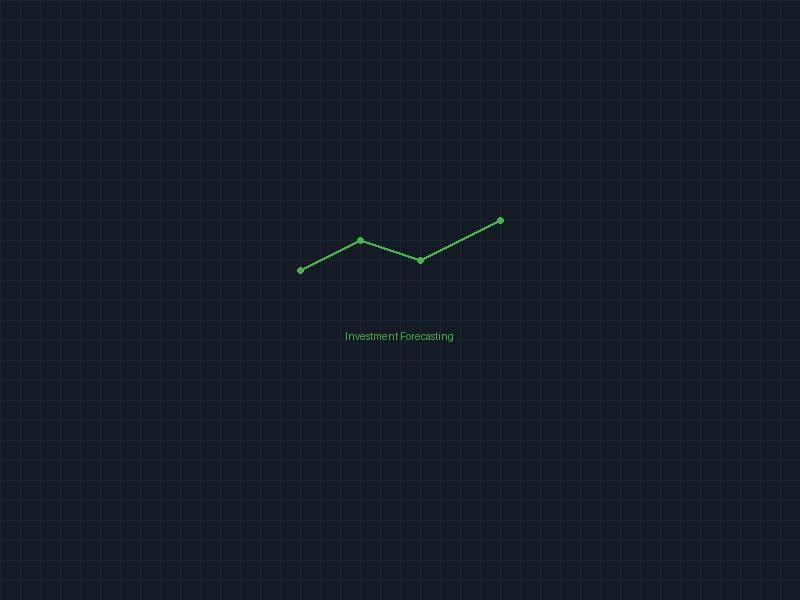

Overview
A Python-based asset pricing simulation designed to explore how investors predict asset prices using various forecasting methods. This project specifically focuses on naive, adaptive, and trend-following techniques, illustrating their impact on market dynamics and investor behavior.
Key Features
- Three distinct forecasting methods:
- Naive Forecasting: Predicts future prices based on the most recent price observed
- Adaptive Forecasting: Forecasts dynamically adjust based on recent prices and previous predictions
- Trend Forecasting: Projects future prices by identifying recent trends
- Adjustable forecasting parameters (alpha and beta)
- Incorporation of stochastic noise for realism
- Modular and extendable Python codebase
Technologies Used
- Python
- NumPy for numerical computations
- Pandas for data manipulation
- Matplotlib/Seaborn for visualization
Impact
This project provides valuable insights into financial economics and asset pricing theory, making it particularly relevant for economics, finance, and data-focused roles. The simulation helps understand how different forecasting strategies affect market behavior and investment outcomes.